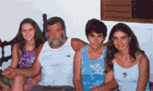
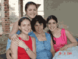

Débora (1982)
|
ÁLBUM:
Para ampliar a foto clique sobre ela.
[página não recuperada no acervo]

[página não recuperada no acervo] [imagem histórica não recuperada: ../MiniFeHeViAmDeLoGeViRaGr.gif (Boa reunião de família em Belo Horizonte)] [página não recuperada no acervo] [imagem histórica não recuperada: ../MiniNanDebGer.gif (Natal 2003)] [página não recuperada no acervo]
[página não recuperada no acervo]Árvore |
Pais |
Irmãos e irmãs |
Cônjuge |
Filhos |
Sebastião [página não recuperada no acervo]
Zaniratti [página não recuperada no acervo] Maria das Graças Costa Ferreira |
> Débora
< Viviane [página não recuperada no acervo] |
X |
X |
FONTES:
Maria das Graças.
16.01.2005 Página inicial